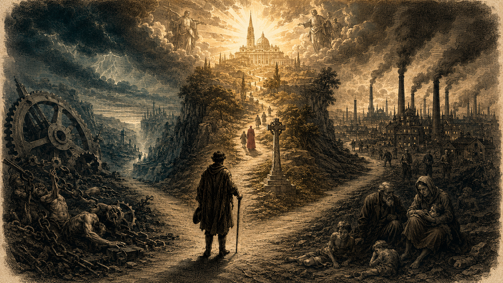

違反自然律——私產是天賦權利，根源於人的理性與家庭責任。
違反實踐理性——廢私產會傷害勞工本身，因剝奪了他改善生活的動力與希望。
違反正義——剝奪合法所有人，使國家陷入超越自身的權能範圍。
所謂的「理想平等」會把所有人壓低到同樣的困乏與卑屈，而非提升眾人。
勞動有兩重性——既是個人的，也是必要的。工人不能像「自由選擇」般拒絕生存。
當生存壓力迫使工人接受低於合理生活水準的工資時，他實是「強力或不公道之犧牲者」。
把人視為「賺錢的牲口」，違反人作為天主肖像的尊嚴。
表面上的「契約自由」掩蓋了實質的剝削，最終將社會推向社會主義式革命的深淵。
一、私產神聖：但所有權與使用權須分辨。
二、階級合作：不是鬥爭，而是相互適應。
三、國家適度：保護貧者，但不侵越家庭。
四、自由結社：恢復工人團體，以信仰為基。
社會在公道、互助、與愛德中重獲秩序，貧富兩階級不再對立，而像兄弟般同行。
通諭花了第三段到第十二段一連十段，系統性地拆解社會主義的主張。教宗的論證不是政治性的，而是哲學與神學性的——他從「人是什麼」這個根本問題出發。
動物只能應付眼前的需要，但人因有理性，可以預見未來、計畫長遠——因此他不僅能享用土地的果實，更能「主有土地本身」。私產是這個能力的自然展現。
當一個人耕種土地、改造土地，他已在其上「留下了自己的人格之印痕」。剝奪這份成果就是剝奪他自己的人格。
家庭是一個有自身權利與義務的「社會」，它先於國家而存在。父親要供養子女、傳承家業——這要求他必須能擁有並傳承財產。廢私產等於毀家庭。
勞工辛勤工作的動機，正是為了積蓄一點屬於自己的東西。廢私產等於毀滅他改善生活的全部希望。
真正的平等不是消除差異，而是讓每個人的尊嚴被尊重。社會主義的「平等」實際上是把所有人都壓低到同樣的困乏。
私有財產之不可侵犯。這個既經確定，我們就可以通一步指出，應該到那裡去發現我們所可找尋的補救辦法。 §12 社會主義的檢討
常有人誤以為通諭只反社會主義、不反資本主義——這是嚴重的誤讀。教宗對「不受約束的資本」的譴責同樣猛烈，特別集中在第十六、十七段及第三十三、三十四段。
當工人不接受就餓死，所謂「自由協議」根本不是自由。通諭明確指出，這種協議使工人成為「強力或不公道之犧牲者」。
勞動既是個人的（屬於個人，可以自由處置），也是必要的（生存所必需）。前者讓人有議價自由，後者讓任何低於生存標準的工資都構成不義。
通諭主張：工資的合理標準是它能否「使工資獲得者足夠維持其合理而節約的安適生活」——包括他的妻子和孩子。這就是後來「家庭工資」概念的源頭。
通諭引用聖經，把扣減工人工資稱為一項「天主必然會聽到而要忿怒且施以懲罰的罪行」。這是極嚴厲的譴責。
「把人類當作用以賺錢的牲口對待，或是把人類祇看作肌肉和軀體的力量，那才是可恥且又非人性的事。」
有一條自然律卻比人與人之間的任何合約都更為重要，更為年代悠久，這條自然律便是，報酬必須能使工資獲得者足夠維持其合理而節約的安適生活。 §34 合法工資
通諭的建設性方案從第十三段展開，並貫穿後半部。它不是某種「中間路線」或妥協，而是建基於對人之本性的完整理解——人既是肉身又是靈魂、既屬家庭又屬社會、既為現世又向永恆。
聖多瑪斯阿奎納斯的分辨成為通諭的金鑰：「人是否擁有金錢的權利，是一件事；人是否有隨心所欲使用金錢的權利，卻是另一件事。」私產不可廢，但富人有義務在自身需要被滿足後，將剩餘施捨給貧者——這是愛德的義務，雖非法律強制。
通諭用「人體」比喻社會：資本與勞動就像人體不同的肢體，必須協調才能行動。視兩者為「天生互相仇視」是最大的錯誤。彼此都需要對方——這既是經濟現實，也是道德要求。
國家不應吞併家庭與個人，但「碰到任何一個階級的一般利益受到損害時，公家權力就應該出來解決」。特別是貧者，「應該受到公家特別的關心和保護」——因為富者有自衛之法，貧者卻無依無靠。這是後來「優先選擇貧者」原則的源頭。
通諭呼籲恢復工人團體——但不是中世紀行會的簡單復辟，而是適應現代環境的新型互助組織。最重要的是：這些團體必須以宗教與道德為根基，否則就會墮入社會主義工會的暴力鬥爭模式。
正如人體的對稱乃是身體上的各部分配合所造成的結果一樣，所以在一個國家之中，自然也規定著這兩個階級應該在和階協調的狀態下並存，可說彼此應該互相適應，這樣才能維持那個政體的平衡。 §15 階級合作，非階級鬥爭
將三條道路在六個關鍵問題上的立場並列，可以一眼看出教會立場的獨特之處——既不在左、也不在右，而是在更深的人學根基上。
| 議題 | 社會主義 | 自由放任 | 教會之路 |
|---|---|---|---|
| 私有財產 | 應廢除，財產歸公有 | 絕對神聖，不受任何限制 | 天賦權利不可廢，但其使用須兼顧公益 |
| 勞資關係 | 天然敵對，必須鬥爭 | 純粹契約關係，付了錢就算了結 | 如肢體般協調合作，互負道德義務 |
| 工資 | 由國家集中分配 | 由市場自由決定 | 市場為一般基準，但須足夠維持工人及家庭合理生活 |
| 國家角色 | 全面接管經濟與社會 | 最小化，不應干預契約 | 適度干預，特別保護貧弱；尊重家庭與個人之自然權利 |
| 家庭 | 附屬於國家，可被取代 | 與勞動契約無關 | 比國家更早存在，有自身的自然權利 |
| 勞工結社 | 必須加入革命性工會 | 視為對契約自由的威脅 | 天賦自然權利，須有信仰與道德為基 |